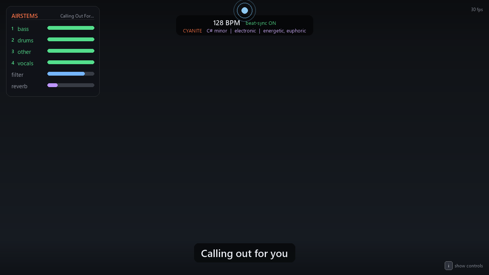

Pull any song apart and play it back with your bare hands — beat-locked, in real time, with synced karaoke lyrics.

Built with Musixmatch · LALAL.AI · Cyanite · MediaPipe · Python · sounddevice · librosa
Stem separation and synced lyrics usually live behind a mouse and a timeline. AirStems turns them into a live instrument — point a webcam at your hands and perform the song.
MediaPipe tracks both hands. Right hand mutes/unmutes each stem; left hand drives a low-pass filter and reverb.
A librosa beat grid quantizes every change to the next beat, so drops and returns always land musically.
Musixmatch synced lyrics scroll underneath — line-level subtitles and word-by-word rich sync.
A real-time stereo sounddevice callback mixes the stems and runs an IIR filter + Schroeder reverb live — no pre-rendered audio.
Natural gestures, plus a few keys. Press i in the app to see this any time.
Each API does a distinct job in the signal chain.
Splits any track into vocals / drums / bass / other — the stems you conduct.
Time-synced lyrics (subtitles + word-by-word rich sync) for the karaoke overlay.
AI analysis — BPM, key and mood shown live on the HUD.
Real-time hand tracking that turns gestures into musical control.
See it in action.
A standard Python app — clone, install, point it at a webcam.
git clone https://github.com/lluisestape-upc/AirStems.git cd AirStems python -m venv venv .\venv\Scripts\activate pip install -r requirements.txt # prepare any song in one command (stems + lyrics + analysis): python prep.py "song.mp3" --artist "Baauer" --title "Calling Out For U" python airstems.py # then click the window and use your hands
Full instructions, gesture map and architecture are in the README.